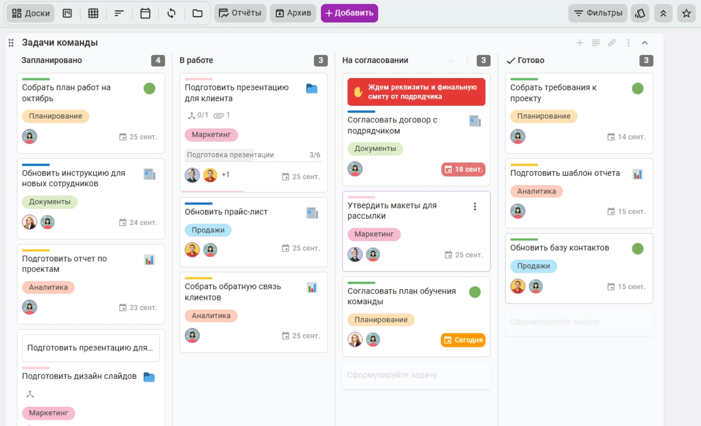
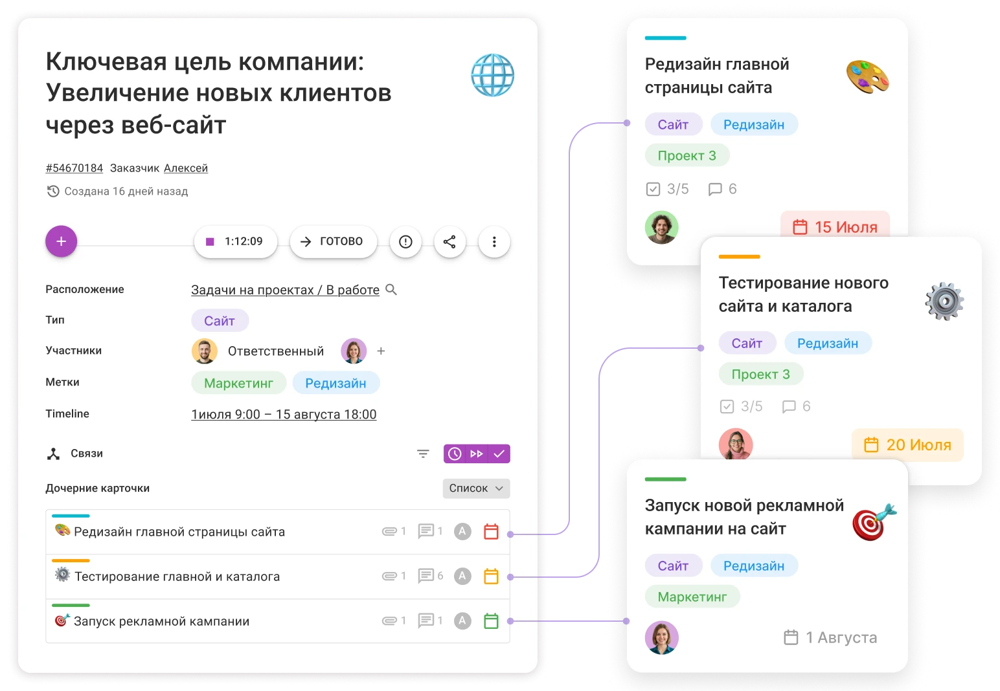
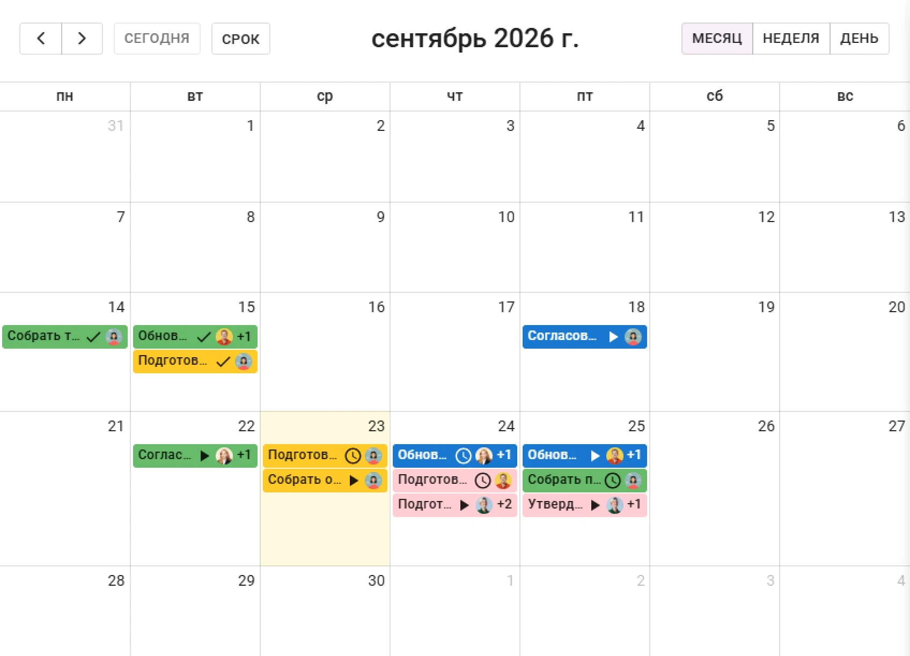
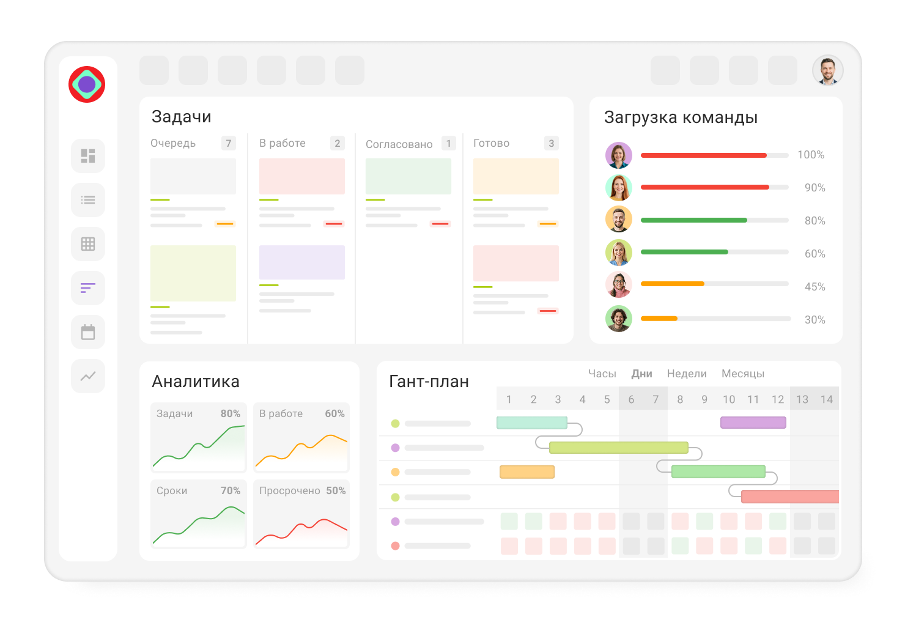

Вы можете добавить в карточки неограниченное количество полей с информацией, назначить ответственных, установить сроки, добавить подробное описание и общаться с коллегами.
Создавайте карточки для каждой задачи, добавляйте подробное описание и общайтесь с коллегами в чате
Для разных категорий задач создавайте готовые шаблоны с нужными полями и описаниями. Для каждого типа задач задавайте свои правила и строгий поток.
Если по какой-то причине вы не можете в данный момент выполнить задачу, добавьте предупреждение-блокировку и укажите причину или блокирующую карточку.
По мере выполнения работы передвигайте карточки на доске от одного этапа к другому, пока задача не будет готова. Добавьте визуальные сигналы и метки, чтобы быстро ориентироваться в задачах на досках.

Внутри карточки будут показаны все ее взаимосвязи — родительские и дочерние задачи. Вы сможете наглядно оценить, какую работу необходимо сделать, чтобы завершить проект, и легко следить за прогрессом выполнения подзадач.

Если у вас есть регулярные повторяющиеся задачи, создайте карточки по расписанию, которые будут автоматически появляться на досках в нужное время

Вы сами решаете, о каких действиях с задачами получать уведомления. И где их получать. Узнавайте о важных событиях, оставляйте комментарии и ставьте задачи там, где вам удобно
Легко автоматизируйте повторяющиеся действия с задачами
